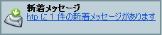

Netscape Mail & Newsgroups を使用すると、すべてのインターネット通信を一箇所で管理できます。 複数のビジネス用メール アカウントや個人用メール アカウント、またはインターネット ニュースグループをセットアップしたり管理することができます。必要なすべての操作を 1 つのウィンドウ、つまり ［Mail & Newsgroups］ウィンドウで行うことができるのです。 さらに、Mail & Newsgroups では、Netscape Webmail と AOL の両方にアクセスできます。
Netscape Mail & Newsgroups を使用するには：
|
|||
| Mail & Newsgroups アイコン | |||
| このセクションの内容： |
| このセクションの内容： |
メールまたはニュースグループのアカウントを設定するには、まず［ウィンドウ］メニューを開き、［Mail & Newsgroups］を選択します。 まだアカウントを設定していない場合は、アカウント ウィザードが自動的に表示されるため、その指示に従ってアカウントを設定することができます。
アカウント ウィザードには、新規アカウントを作成するための指示が表示されます。 設定するための情報が不明な場合は、[キャンセル] をクリックし、インターネット サービス プロバイダ（ISP）またはヘルプ デスクに問い合せてください。
既にアカウントがある場合は、［Mail & Newsgroups］ ウィンドウが開くだけで、アカウント ウィザードは表示されません。 代わりに、［Mail & Newsgroups］ウィンドウが開いた後、［ファイル］メニューから［新規作成］を選択します。 詳しくは、「追加のメールおよびニュース アカウントを設定する」を参照してください。
AOL（America Online）は、人気のあるインターネット サービス プロバイダの 1 つです。 Netscape Webmail は簡単に使用できる無料のメール サービスで、どこからでもアクセスできます。
既に AOL または Netscape Webmail のアカウントがある場合は、アカウント ウィザードを使って Netscape Mail & Newsgroups を設定してください。そうすれば、そのアカウントからメールにアクセスできます。 ［編集］メニューから［Mail & Newsgroups アカウントの設定］を選択し、［アカウントを追加］をクリックします。
まだ Netscape Webmail のアカウントを持っていない場合は、フォルダ ウィンドウにある「無料 Webmail」アイコンをクリックすると、無料アカウントのサインアップを行うことができます。
注記： AOL または Netscape Webmail アカウントにサインアップしてそれを使用するためには、AOL Instant Messenger がインストールされていなければなりません。 AOL Instant Messenger は、Netscape 7.0 をインストールするときに標準設定としてインストールされます。
メール アカウントを設定する場合は、以下の情報を用意してください。これらの情報は、ISP または電子メール プロバイダから提供されます。
ニュースグループ アカウントを設定する場合は、以下の情報を用意してください。これらの情報は、ISP または電子メール プロバイダから提供されます。
メールまたはニュースグループの新規アカウントを設定するには、まず［Mail & Newsgroups］ウィンドウを開きます。
アカウント ウィザードで要求される情報は、最初のウィンドウで指定した新規アカウントのタイプによって異なります。 以下の太字の見出しは、ISP または電子メール プロバイダのアカウントを設定する際に表示される各ウィンドウのタイトルです。
受信サーバと送信（SMTP）サーバの名前もここで指定します。 これは、メッセージを送信するメール サーバ（SMTP ホストとも呼ばれる）の名前です。 ［次へ］をクリックして続行します。
注記： 複数のメール アカウントがある場合でも、指定する送信サーバ（SMTP）は 1 つだけです。 SMTP ホストの名前は、提供されたアカウント設定情報内に明記されていない場合があります。 たとえば、SMTP ホストが POP ホストまたは IMAP ホストと同じ場合などがそうです。確かでない場合は、ISP またはシステム管理者に問い合わせてください。
これで、アカウントからのメッセージを受信する準備ができました。 詳しくは、「新着メッセージを取得する」を参照してください。
[ このセクションの最初に戻る ]
［アカウントの設定］ダイアログ ボックスを使用して、新規アカウントを追加したり、次のような既存のアカウント情報を変更することができます。
新規のアカウントを追加したり、既存のアカウント設定を変更したりするには、まず［Mail & Newsgroups］ウィンドウを開きます。
標準のアカウントは、Mail & Newsgroups を初めて起動するときにログインし（IMAPアカウントの場合のみ）、自動的に新着メッセージを確認するアカウントです。 POP アカウントの場合は、［受信］ボタンをクリックしないと新着メッセージを取り込むことはできません。
[ このセクションの最初に戻る ]
既存のメール アカウントやニュースグループ アカウントの情報を表示または変更するには、まず［Mail & Newsgroup］ウィンドウを開きます。
重要： サーバ タイプを変更する必要がある場合（例、POP から IMAP に変更）には、まず既存のアカウントを削除する必要があります。 次に Netscape を再起動します。 その後、［Mail & Newsgroups アカウントの設定］ダイアログ ボックスを開き、［アカウントを追加］をクリックして新しいサーバ タイプのアカウントを作成し直します。
[ このセクションの最初に戻る ]
AOL Instant Messenger を使用する場合は、Netscape Mail & Newsgroups からメールを管理できるほか、友だちや仕事仲間とすばやくメールのやり取りができます。たとえば、友だちリストのエントリをアドレス帳にすばやく追加したり、任意のメッセージ ウィンドウからオンラインの仕事仲間にインスタント メッセージを送信することができます。
AOL Instant Messenger にサイン オンすると、受信メール メッセージの送信者または受信者がサイン オンしているかどうかが分ります。 メッセージ エンベロープ内のユーザ名の右側に IM アイコン  が表示されている場合は、ユーザ名を右クリックし、次にポップアップ メニューの［インスタント メッセージを送信］を選択すると、メッセージ セッションを開始できます。
が表示されている場合は、ユーザ名を右クリックし、次にポップアップ メニューの［インスタント メッセージを送信］を選択すると、メッセージ セッションを開始できます。
注記： IM アイコンは、該当するユーザのスクリーン ネームが自分のアドレス帳の 1 つに登録されていないと表示されません。
AOL Instant Messenger にログオンするには：
 |
|||
| AOL Instant Messenger アイコン | |||
AOL Instant Messenger の使い方について詳しくは、「AOL Instant Messenger を始めるにあたって」を参照してください。
[ このセクションの最初に戻る ]
| このセクションの内容： |
IMAP アカウントの場合は、Mail & Newsgroups を開いて IMAP アカウントの［受信トレイ］を選択すると、新着メッセージが自動的に取り込まれ、［受信トレイ］内に表示されます。
POP アカウントの場合は、［受信トレイ］を選択して［受信］をクリックしないと、新着メッセージを取り込むことはできません。 特に設定を変更しない限り、POP アカウントからのメッセージは、それらを取り込んだときに POP サーバから削除されます。 メッセージをコンピュータにダウンロードしたときサーバ上にメッセージのコピーを保存するように POP サーバの設定を変更できます。
Mail & Newsgroups の起動時に新着メッセージを取り込み、さらに一定の間隔で新着メッセージを確認するように設定することも可能です。
|
|||
| Mail & Newsgroups アイコン | |||
新着メッセージが届くと、ステータス バーの Mail & Newsgroups アイコンに緑の矢印が表示されます。
 |
|||
| 新着メッセージの通知 | |||
新着メッセージを自動的に確認するようにメール アカウントを設定するには、まず［Mail & Newsgroups］ウィンドウを開きます。
新着メッセージが届いたときにサウンドを鳴らしたり警告を表示したりするように Netscape Mail & Newsgroups を設定する方法については、「Mail & Newsgroups の設定 - Mail & Newsgroups」を参照してください。
メッセージは、いつでも手動で取り込むことができます。選択したアカウントまたはニュースグループの新着メッセージを取り込むには、次のいずれかを実行します。
すべてのメール アカウントの新着メッセージを受信するには、まず［Mail & Newsgroups］ウィンドウを開きます。
現在ログインしていないメール アカウントがある場合は、そのアカウントの新着メッセージを取り込む前に、ユーザ名とパスワードの入力を求められます。 ただし、パスワード マネージャを使ってユーザ名とパスワードを保存してあれば、これらの情報の入力は求められません。
注記： ［Mail & Newsgroups］ウィンドウの［ファイル］メニューから［アカウント別の新着メッセージの受信］を選択します。
特定のメール アカウントの新着メッセージを受信するには、まず［Mail & Newsgroups］ウィンドウを開きます。
注記： このアカウントに対して初めてメッセージを取得する場合は、パスワードを入力するよう求められます。 この時点で、パスワード マネージャにパスワードを保存するよう設定することもできます。
パスワード マネージャを使用すると、自分のコンピュータで使用しているすべてのユーザ名およびパスワードを保存できます。そうすれば、それらの情報が自動的に入力されるようになります。 詳しくは、「パスワード マネージャを使用する」を参照してください。
[ このセクションの最初に戻る ]
［Mail & Newsgroups］ウィンドウ（［ウィンドウ］メニューから［Mail & Newsgroups］を選択して開くウィンドウ）のレイアウトはユーザ設定できます。
[ このセクションの最初に戻る ]
メッセージを件名、差出人、日付、優先順位などのカテゴリ別に並べ替えるには、まず［Mail & Newsgroups］ウィンドウを開きます。
列見出しの順序を変更するには、まず［Mail & Newsgroups］ウィンドウを開きます。
メッセージをスレッド（件名）別にグループ化し、メッセージと応答をまとめて表示するには：
| |
|||
| ［スレッド］ボタン | |||
ヒント： 既に親メッセージを読んだ場合に、折りたたみ表示されているスレッド内に未読のメッセージがあるときは、親メッセージに下線が表示されます。
[ このセクションの最初に戻る ]
メール メッセージをテキスト ファイル、HTML ファイル、または Outlook Express ファイルとして保存するには：
選択したメッセージを印刷するには：
[ このセクションの最初に戻る ]
標準設定では、受け取ったメール メッセージにリモート画像を表示できます。 メッセージの添付として送信された Web ページに埋め込まれている画像をダウンロードしないようにするには：
標準設定では、受信するメール メッセージに対して JavaScript が無効に、そしてプラグインが有効になっています。 これらの設定を変更するには：
[ このセクションの最初に戻る ]
| このセクションの内容： |
メッセージのアドレスを指定したり、メッセージを作成、返信、および送信したりするには、次のいずれかを実行します。
ヒント： ［Mail & Newsgroups アカウントの設定］ダイアログ ボックスを使って、このアカウントに対するメッセージ作成用 HTML テキスト エディタを指定できます（アカウントごとに別のエディタを指定できます）。 アカウントを選択し、［HTML 形式でメッセージを作成する］チェックボックスをオンにすると、すべてのメッセージに対してその HTML エディタが使用されるようになります。 詳しくは、「アカウントの設定を変更する」を参照してください。
HTML 形式でメッセージを作成すると、メッセージ内に様々なフォント、テキストのスタイル（太字や斜体など）と色、表、行頭番号や箇条書き、および画像を使用できます。 ただし、受取人の中には、テキスト形式のメッセージしか読めない人もいるかもしれません。 テキスト エディタを使用したい場合は、Shift キーを押しながら［作成］または［返信］ボタンをクリックすると、必要に応じてテキスト エディタを使用できます。
[ このセクションの最初に戻る ]
［作成］ウィンドウでは、メールおよびニュースグループ メッセージのアドレス指定、作成、送信を行います。 最初に、［アカウントの設定］パネル（［編集］メニューから［Mail & Newsgroups アカウントの設定］を選択）で、テキスト エディタと HTML エディタのどちらでメッセージを作成するかを指定します。
［作成］ウィンドウを表示するには、Mail & Newsgroups ツールバーの［作成］ボタンをクリックします。
［作成］ウィンドウには、次のコンポーネントがあります。
次のボタンがあります。
HTML エディタを使用してメッセージを作成するように設定した場合は、Netscape Composer と同様の書式設定ボタンを含む別のツールバーが表示されます。
HTML エディタの使い方については、「Web ページの書式を設定する」を参照してください。
[ このセクションの最初に戻る ]
メール メッセージのアドレスを指定するには：
アドレス自動補助がオン（標準設定）になっている場合は、受取人の名前の最初の数文字を入力すると、完全なアドレスが表示されます （または、名前の一部を入力して Enter キーを押します）。
注記：同じ行に複数のアドレスを指定する場合は、カンマで区切ります。ただし、名前はカンマでは区切らないでください。 たとえば、次のように指定します。
user1@netscape.net,user2@netscape.net
ヒント： 表示中のメッセージの電子メール アドレスを右クリックして、ポップアップ メニューから［メールを作成］を選択すると、メッセージの送信先アドレスをすばやく指定できます。
メッセージの送信元アカウントを変更する
複数のメール アカウントを持っている場合は、新規メッセージの作成用に選択してあるアカウント（またはサーバ）に基づいて、［差出人］フィールドに表示されるアカウントが決まります。 ただし、メッセージの作成中に、メッセージの送信元のアカウントを変更することもできます。［差出人］フィールドをクリックしてアカウントのリストを表示し、任意のアカウントを選択します。 メッセージのコピーは、送信元アカウントの送信済みフォルダに保存されます。
アドレス自動補助について
アドレス自動補助とは、名前を検索したり完全な名前を入力しなくても、［作成］ウィンドウで簡単にメール アドレスを入力できる機能のことです。 Mail & Newsgroups によってアドレス帳と LDAP ディレクトリ サーバ（使用可能な場合）が自動的に検索され、一致する名前が見つかるとその完全な名前が表示されます。また、一致する名前が複数個ある場合には、追加情報とともに使用可能な選択肢がすべて表示されるため、入力ミスがなくなります。アドレス自動補助は、標準設定でオンになっています。
自動的に表示されたアドレスを使用しない場合は、Backspace キーまたは Delete キーを押して文字を削除し、別のアドレスを入力します。
アドレス自動補助をオフにするには：
[ このセクションの最初に戻る ]
メッセージを作成する際には、［オプション］メニューから次のメッセージ送信オプションを選択できます。
メッセージの作成にテキスト エディタを使用するように設定するには、［編集］メニューの［Mail & Newsgroups アカウントの設定］コマンドを使用します。［アカウントの設定］ダイアログ ボックスでアカウントを選択し、メッセージ作成時に標準テキスト エディタを使用できるように［HTML 形式でメッセージを作成する］をオフにします。 必要なときにのみテキスト エディタを使用したい場合は、Shift キーを押しながら［作成］または［返信］ボタンをクリックすると、テキスト エディタを使用できます。
[ このセクションの最初に戻る ]
メール メッセージに返信するには：
すべての返信に元のメッセージを含め、返信メッセージ内に元のメッセージをどのように配置するかを指定するには：
[ このセクションの最初に戻る ]
メッセージを転送する際、元のテキストの転送方法にはインライン（メッセージの本体部分、標準設定）または添付のいずれかを指定できます。
メッセージを転送するには：
転送メッセージの標準設定を設定するには：
ヒント： 標準のメッセージ転送設定を上書きするには、メッセージを選択し、［メッセージ］メニューから［形式を変換して転送］を選択して、［本文として］または［添付にする］を選択します。
[ このセクションの最初に戻る ]
受取人が自分のメッセージを表示したとき（開いたとき）に通知が送られてくるようにするには、受信確認を使用します。 受取人は、MDN（Message Disposition Notification）規格をサポートしているメール プログラムを使用している必要があります。 ただし、受取人が受信確認を送り返さないように選択できることを忘れないでください。 ニュース サーバはこの機能をサポートしていないため、ニュースグループに送信したメッセージに受信確認要求が含まることはありません。
すべての送信メッセージに対して受信確認を要求する場合は、受信確認のグローバル設定を有効にします。 また、［受信確認］設定では、自分が受け取った受信確認要求の管理方法も指定できます。 これらのグローバル設定は、個々のアカウントの設定で上書きすることができます。
メッセージ単位で受信確認を要求するには：
各メール アカウントからメッセージを送信する際、自動的に受信確認を要求するには：
受信確認の設定について詳しくは、「Mail & Newsgroups の設定 - 受信確認」を参照してください。
[ このセクションの最初に戻る ]
後で作成作業を続行できるようにメール メッセージを下書きとして保存するには：
注記： 下書きとして保存した場合、メール メッセージは開いたままになります。
下書きメッセージを編集または送信するには、まず［Mail & Newsgroups］ウィンドウを開きます。
注記： メッセージを送信すると、そのメッセージは［下書き］フォルダから削除されます。
ヒント：メッセージをダブルクリックしてメッセージを開くこともできます。 この方法は、メッセージ ウィンドウが閉じている場合に便利です。
不要な下書きメッセージを削除するには、まず［Mail & Newsgroups］ウィンドウを開きます。
[ このセクションの最初に戻る ]
テンプレートは、週間報告など、定期的に送信するメッセージの標準書式を設定するのに便利な機能です。［作成］ウィンドウなどのウィンドウから、メッセージをテンプレートとして保存できます。
メッセージをテンプレートとして保存するには：
別の方法として、既に書式が設定されている既存のメッセージを開いてもかまいません。
テンプレートを使ってメッセージを作成するには：
注記： メッセージを送信しても、［テンプレート］フォルダからテンプレートが削除されることはありません。 テンプレートは、再び使用できるように保管されます。
不要なメッセージ テンプレートを削除するには、まず［Mail & Newsgroups］ウィンドウを開きます。
[ このセクションの最初に戻る ]
| このセクションの内容： |
HTML メッセージには、Web ページのように書式付のテキスト、リンク、画像、および表を含めることができますが、HTML メッセージを受信できない受取人もいることに注意してください。 Netscape Mail & Newsgroups では、各メール アカウントに対し、HTML（リッチ テキスト）形式エディタまたは通常のテキスト エディタのいずれかを使用してメールやニュースグループ メッセージを作成できます。 また、自分が送信するメッセージの受取人が通常 HTML とテキストのどちらの形式でメッセージを受信するかを設定したり、特定のアドレスで HTML 形式のメールを受信できるかどうかわからない場合にメッセージをどのように扱うかなどのオプションを選択できます。
メッセージ作成の標準設定として HTML エディタを使用するかどうかを指定するには、まず［Mail & Newsgroups］ウィンドウを開きます。
[ このセクションの最初に戻る ]
HTML ソース コードの操作方法を理解していれば、メール メッセージ内に HTML タグ、スタイル属性、および JavaScript を挿入したり、またはそれらを編集することができます。HTML ソース コードの操作に馴れていない方は、変更しない方がよいでしょう。HTML コードを操作するには、以下のいずれかの方法を使用します。
HTML ソース コードの編集方法について詳しくは、「詳細プロパティ エディタを使用する」を参照してください。
[ このセクションの最初に戻る ]
標準設定では、受取人のメール プログラムが HTML 形式のメッセージ表示できるかどうか不明な場合、HTML メッセージを送信しようとしたときにプロンプトが表示されます。
メール メッセージの送信形式オプションを選択するには、まず［Mail & Newsgroups］ウィンドウを開きます。
注記： この設定は、メール メッセージにしか適用されません。ニュースグループ メッセージには適用されません。
メッセージの作成中に 1 人以上の受取人が HTML 形式のメールを受信できないことが分かった場合は、［送信］ボタンをクリックするときにメッセージを別の形式に変換できます。
[ このセクションの最初に戻る ]
アドレス帳内の各個人に対し、HTML メッセージとテキスト メッセージのどちらを使用するか指定すると、メッセージを作成する際に時間を節約できます。
この受取人が標準テキスト（フォーマットなし）のメッセージしか受信できない場合は、［標準テキスト］を選択します。確かでない場合は、［不明］を選択します。
［不明］を選択すると、［設定］ダイアログ ボックス内にある［Mail & Newsgroups］カテゴリの［送信形式］設定に基づいて、送信形式が決定されます。 この設定から正しい形式を決定できない場合は、メッセージの送信時に送信形式の選択を求められます。
[ このセクションの最初に戻る ]
受信した HTML メッセージを構成している HTML コードやその他のコードをすばやく表示できます。
[ このセクションの最初に戻る ]
［HTML メールの確認］ダイアログ ボックスは、HTML メッセージを表示できない受取人にメッセージを送信しようとしたとき、または Mail & Newsgroups によって受取人が HTML メッセージを表示できないと判断されたときに表示されます。 判断に困った場合は、HTML と標準テキストの両方の形式でメッセージを送信してください。
[ このセクションの最初に戻る ]
| このセクションの内容： |
送信メール メッセージにファイルを添付するには：
ヒント：右側にある［添付］ウィンドウをクリックして、このダイアログ ボックスを表示することもできます。
ヒント： 1 つまたは複数のファイルをデスクトップから［作成］ウィンドウの［添付］領域にドラッグ&ドロップすることもできます。
送信メール メッセージに Web ページを添付するには：
ヒント： Navigator ブラウザにページを表示しているときは、［ファイル］メニューの［ページを送信］を選択して、そのページを他の人に送信することができます。
[ このセクションの最初に戻る ]
受信したメールに Netscape で表示できる形式のファイル（画像ファイルや HTML ファイルなど）が添付されている場合、添付ファイルの内容はインライン（メッセージの本文内）で表示されます。 その他の形式のファイルが添付されている場合は、別のアプリケーションを使って開くか、またはハード ディスクに保存します。
添付ファイルを開くには、コンピュータにそのファイル形式を開くことができる適切なプログラムがインストールされている必要があります。 たとえば、.DOC ファイルを開こうとする場合は、コンピュータに .DOC ファイルを開くことのできるプログラムがインストールされている必要があります。
添付ファイルを開くには：
注記：メールの表示に IMAP メール サーバを使用している場合、添付ファイルはすべてサーバ上に保存されます。
[ このセクションの最初に戻る ]
添付ファイルを保存するには：
ヒント：添付ファイルをすべて保存するには、添付ファイル リストの一番上のファイルを右クリックして［すべて保存］を選択し、すべての添付ファイルの保存先を指定します。
[ このセクションの最初に戻る ]
| このセクションの内容： |
メッセージの削除方法は、メール サーバのタイプ（POP または IMAP）によって異なります。 削除された POP メッセージは、［ごみ箱］フォルダに自動的に移動されます。IMAP を使用している場合は、メッセージを削除するのに別のオプションを設定できます。
［受信］フォルダまたは他のフォルダからメッセージを削除するには、まず［Mail & Newsgroups］ウィンドウを開きます。
メッセージを開かずに削除するには、まず［Mail & Newsgroups］ウィンドウを開きます。
別の方法として、メッセージ ウィンドウ ハンドル（メッセージ リストの下部中央にある線状の部分）をクリックして、メッセージ ウィンドウを閉じることもできます。
IMAP メッセージの削除を設定するには：
[ このセクションの最初に戻る ]
POP サーバを使用してメールを送信する場合、または IMAP で［ごみ箱］フォルダを使用するように設定した場合は、次の手順に従って［受信トレイ］フォルダや他のフォルダからメッセージを削除します。
［ごみ箱］フォルダのメッセージを元に戻すには：
メッセージを完全に削除するには：
[ このセクションの最初に戻る ]
| このセクションの内容： |
アドレス帳には、仕事仲間、友だち、家族など、頻繁にメールを送信する相手の電子メール アドレスや連絡先情報を保存できます。 Netscape Mail & Newsgroups には 2 つのアドレス帳があります。個人用アドレス帳と集積アドレス帳です。また、このほかのアドレス帳を作成することもできます。 さらに、他のメール プログラムや前バージョンの Netscape からアドレス帳をインポートすることも可能です。アドレス帳の内容は、自分のコンピュータのハード ディスクに保存されます。
アドレス帳に LDAP ディレクトリ サーバの LDAP ディレクトリにある電子メール アドレスを表示することもできます。 ディレクトリ サーバには、ローカルに保存されたアドレス帳に含まれていないユーザの電子メール アドレスが保存されています。 LDAP（Lightweight Directory Access Protocol）は、企業アドレス帳などのインターネットまたはイントラネット ディレクトリ サービスにアクセスするための業界標準です。
個人用アドレス帳を使うと、自分で選択した名前を追加できます。 また、メーリング リストを作成したり、個々のアドレス エントリを編集することもできます。 Netscape Webmail または AOL のアカウントを持っている場合は、それらのアドレス帳のエントリを個人用アドレス帳のエントリと同期化できます。
集積アドレス帳は、受信メッセージおよび送信メッセージ内の電子メール アドレスを自動的に集めます。 受信メール メッセージの場合は、メッセージを開いたときにその差出人のアドレスが集積アドレス帳に保存されます。送信メッセージの場合は、［送信］をクリックするとアドレスが保存されます。収集するアドレスを指定する（メール メッセージのアドレスのみ収集、またはメール メッセージとニュースグループ メッセージのアドレスを収集）には、電子メール アドレスの集積機能の設定を変更します。
LDAP ディレクトリ（アドレス検索サービスとも呼ばれる）には、ローカルに保存されているアドレス帳に含まれない受取人のアドレスを保存します。LDAP ディレクトリを使用すると、電子メール アドレスのデータベースを集中管理でき、サイズの大きいデータベースにもアクセスできます。これは、アドレス自動補助を使用する場合に特に便利です。
標準設定では、自動アドレス集積機能が有効になっています。 自動アドレス集積機能の設定を変更するには、まず［Mail & Newsgroups］ウィンドウを開きます。
［アドレス帳］ウィンドウを開くには：
 |
|||
| アドレス帳アイコン | |||
［アドレス帳］ウィンドウとカードの表示方法を設定するには：
[ このセクションの最初に戻る ]
次のいずれかの方法を使用して、アドレス帳にエントリを追加できます。
[ このセクションの最初に戻る ]
Netscape Mail & Newsgroups では、標準設定で個人用アドレス帳が用意されていますが、別のアドレス帳を作成することもできます。
新しいアドレス帳を作成するには：
|
|||
| アドレス帳アイコン | |||
[ このセクションの最初に戻る ]
アドレス帳カードには、名前、郵便番号、電子メール アドレス、電話番号、受取人が標準テキストまたは HTML形式メッセージのどちらを受信できるかなどの情報を保存できます。
個人のアドレス帳カードを作成するには：
ヒント： 住所情報を入力した場合は、アドレス帳でこのエントリのアドレス帳カードを表示したときに、住所の横に［地図を見る］ボタンが表示されます。 ［地図を見る］ボタンをクリックすると、その住所の地図を含んだ Web ページが表示されます。
注記： このタブに情報を入力するには、AOL Instant Messenger にログオンする必要があります。
ヒント： アドレス帳にエントリをすばやく追加するには、受信したメッセージの電子メール アドレスをクリックし、ドロップダウン リストから［アドレス帳に追加］を選択します。［新しいカード］ダイアログ ボックスが開き、情報を入力することができます。
個々のカードのプロパティを表示または編集するには：
[ このセクションの最初に戻る ]
あるグループのメンバーに定期的にメッセージを送信する場合は、すべてのメンバーの名前を含むメーリング リストを使用すると、メッセージのアドレスをすばやく指定できます。
メーリング リストを作成して、アドレス帳に追加するには：
［アドレス帳］ウィンドウの左側のアドレス帳の下に、追加したメーリング リストが表示されます。
[ このセクションの最初に戻る ]
メーリング リストは、リストを作成したアドレス帳に保存されます。
リストからメンバーを削除するには、まず［Mail & Newsgroups］ウィンドウを開きます。
メーリング リストにメンバーを追加するには：
[ このセクションの最初に戻る ]
Netscape Mail & Newsgroups では、名前や電子メール アドレスを使ってすばやくアドレス帳またはディレクトリを検索できます。また、検索条件の組み合わせを使って、アドレス帳またはディレクトリ内の特定項目を検索することもできます。
名前や電子メール アドレスを使ってアドレス帳またはディレクトリをすばやく検索するには、まず［アドレス帳］ウィンドウを開きます。
入力を終えると、その文字列を含む名前または電子メール アドレスのエントリが表示されます。
アドレス帳またはディレクトリ内で特定のエントリを検索することができます。 ［アドレス帳の詳細検索］ダイアログ ボックスを開いていない場合は、まず［アドレス帳］ウィンドウを開きます。
[ このセクションの最初に戻る ]
別のユーザ プロファイルまたはコンピュータからの Netscape 6 アドレス帳がある場合、または前バージョンの Netscape Communicator や別のメール プログラムのアドレス帳がある場合は、そのエントリを［アドレス帳］ウィンドウにインポートし、新しいアドレス帳を作成できます。 古いバージョンの Netscape からユーザ プロファイルをアップグレードする際には、今まで使用していたアドレス帳も自動的に含まれるため、それらのアドレス帳を個別にインポートする必要はありません。
アドレス帳は、Communicator、Netscape 6、Eudora、Outlook、Outlook Express、またはテキスト ファイル（LDIF、タブ区切り（.tab）、カンマ区切り（.csv）、テキスト（.txt）形式）からインポートできます。 アドレス帳をインポートすると、インポートされたエントリを含む新しいアドレス帳が作成されます。
Communicator、Eudora、Outlook、および Outlook Express からメール メッセージや設定をインポートすることもできます。
アドレス帳をインポートするには、まず［Mail & Newsgroups］ウィンドウを開きます。
ヒント： Communicator のアドレス帳（pab.na2）は、ユーザ プロファイル ディレクトリ（例、C:\Program Files\Netscape\Users。\Users はユーザ プロファイルを含んでいるディレクトリ）に保存されます。
[ このセクションの最初に戻る ]
Netscape のアドレス帳はエクスポートできます。エクスポートしたアドレス帳は、別のユーザ プロファイル内にインポートしたり、別のコンピュータで使用したり、または別のプログラムにインポートして使用することができます。 アドレス帳は、Netscape（.ldif）、タブ区切り（.tab）、カンマ区切り（.csv）、またはテキスト（.txt）形式のいずれかにエクスポートできます。
アドレス帳をエクスポートするには、まず［アドレス帳］ウィンドウを開きます。
[ このセクションの最初に戻る ]
外出中や休暇中など、自分のコンピュータを使えないような場所にいる場合には、アドレス帳の同期機能を使用すると、Web を通じて Webmail や AOL のアカウントから自分のアドレス帳にアクセスできるため、時間を節約できます。
Netscape Webmail または AOL アカウントのアドレス帳を、Netscape 個人用アドレス帳のエントリと同期化することができます。一方のアドレス帳でエントリを追加、編集、削除すると、両方のアドレス帳のエントリが一致するように、もう一方のアドレス帳が自動的に更新されます。
注記： アドレス帳を同期化するには、AOL または Netscape のスクリーン ネームが必要です。 スクリーン ネームを持っていない場合は、http://home.netscape.com でサインアップしてスクリーン ネームを取得できます。
アドレス帳の同期を実行するには、まず［アドレス帳］ウィンドウを開きます。
個人用アドレス帳と Netscape Webmail アドレス帳を同期化するには Webmail のユーザ名とパスワードを、個人用アドレス帳と AOL アドレス帳を同期化するには AOL のユーザ名とパスワードを入力します。
Mail のセッション中は、継続してアドレス帳を同期化できます。再びログインする必要はありません。 ［同期］をクリックするか、［ツール］メニューから［Netscape アドレス帳の同期］を選択します。
[ このセクションの最初に戻る ]
LDAP ディレクトリをアドレス帳に追加すると、ディレクトリ内の電子メール アドレスや他の連絡先情報を検索できるようになります。 また、メール メッセージにアドレスを指定する際にも、アドレス自動補助にディレクトリが使われるようになります。
一般に、LDAP ディレクトリはシステム管理者の指示に従って追加または削除します。 新しいディレクトリをアドレス帳に追加する際に必要な情報については、システム管理者に問い合せてください。
新しいディレクトリを追加するには、まず［アドレス帳］ウィンドウを開きます。
追加したディレクトリが［アドレス帳］ウィンドウのアドレス帳リストに表示されます。
ディレクトリを削除するには：
オフラインでの作業中にアドレス帳の自動補助機能に対してディレクトリを検索または使用できるように、オフライン用のディレクトリをダウンロードまたは同期する方法については、「オフライン用にディレクトリのエントリをダウンロードする」を参照してください。
［ディレクトリ サーバのプロパティ］ダイアログ ボックスが表示されていない場合は、まず［Mail & Newsgroups］ウィンドウを開きます。
［一般］タブ
［詳細］タブ
[ このセクションの最初に戻る ]
| このセクションの内容： |
メッセージ フォルダを作成するには、まず［Mail & Newsgroups］ウィンドウを開きます。
[ このセクションの最初に戻る ]
フォルダの名前を変更するには、まず［Mail & Newsgroups］ウィンドウを開きます。
注記：振り分けたメッセージの保存に使用するフォルダの名前を変更すると、名前が変更されたフォルダを使用するように振り分けが自動的に更新されます。
[ このセクションの最初に戻る ]
フォルダとその内容を、別のメール アカウントにコピーしたり、同じメール アカウント内で移動したりできます。
フォルダを移動またはコピーするには、まず［Mail & Newsgroups］ウィンドウを開きます。
[ このセクションの最初に戻る ]
次の方法のいずれかの方法を使って、メッセージをフォルダ間で移動できます。
注記：IMAP または POP メール サーバのフォルダからハード ドライブのローカル フォルダにメッセージをドラッグ&ドロップすると、そのメッセージは移動され、サーバ上のメッセージは削除されます。
フォルダ間でメッセージをコピーするには：
ヒント： 別の方法として、Shift キーを押したままメッセージ リスト内のメッセージを別のフォルダまでドラッグすることもできます。そうすれば、そのフォルダにファイルがコピーされます。
[ このセクションの最初に戻る ]
IMAP メール アカウントを持っているユーザは、同じネットワーク上にいる他のユーザとフォルダを共有できます。 フォルダを共有すると、ニュースグループのように、複数のユーザが同じメッセージを読んだり操作したりできるようになります。 共有フォルダを使用するには、IMAP メール サーバがアクセス制御リスト（ACL）管理機能をサポートしていなければなりません。 IMAP サーバが共有フォルダをサポートしているかどうか分らない場合は、システム管理者またはヘルプ デスクに問い合せてください。
ネットワーク上の他のユーザとメール フォルダを共有したり、フォルダの共有情報を表示したりするには、まず［Mail & Newsgroups］ウィンドウを開きます。
［ローカル フォルダ］の下に表示されているフォルダ、またはPOP メール アカウントの下に表示されているフォルダは共有できません。
［権利］ボタンを使用できるのは、IMAP メール サーバによってフォルダ共有権利の設定が許可された場合だけです。 このボタンが使用できない場合、このフォルダのフォルダ共有権利を表示することはできますが、それらを変更することはできません。
メール アカウントのフォルダ リストに、共有フォルダが表示されます。また、これが共有フォルダであることを示すアイコンも表示されます。
共有フォルダの購読方法を他のユーザに知らせるメッセージを送信するには、まず［Mail & Newsgroups］ウィンドウを開きます。
共有フォルダを購読できるのは、同じネットワークを共有している受取人だけです。
フォルダの購読は、ニュースグループの購読に似ています。 共有フォルダを購読するには、まず［Mail & Newsgroups］ウィンドウを開きます。
[ このセクションの最初に戻る ]
メッセージを整理したり優先順位を付けるために、メッセージにラベルを付けることができます。 メッセージには標準色とテキスト ラベルを付けることができますが、目的に合わせてラベルの色やテキストを変更することも可能です。
パワフルなラベルの使い方として、特定の送信者から受け取ったメッセージに自動的にラベルを付けるためのメッセージ振り分けを設定できます。 たとえば、自分の上司から送られてきたメッセージに「重要」というラベルを付け、そのメッセージを赤で表示するようなメッセージ振り分けを設定できます。 詳しくは、「メッセージ振り分けを作成する」を参照してください。
メッセージにラベルを付けるには、まず［Mail & Newsgroups］ウィンドウを開きます。
メッセージのヘッダーが選択したラベルの色に変わります。 ラベルのテキストを見るには、［Mail & Newsgroups］ウィンドウに［ラベル］列を表示する必要があります。
ヒント： すばやくメッセージにラベルを付けたり削除したりするには、1 つまたは複数のメッセージを選択し、キーボード上の 1、2、3、4、または 5 を押します。 ラベルを削除するには 0 を押します。
［ラベル］列を表示するには、まず［Mail & Newsgroups］ウィンドウを開きます。
注記： メッセージのラベルは、アカウント単位で機能します。 たとえば、ラベルの付いたメッセージを別のアカウントに移動またはコピーすると、ラベルは維持されません。 同様に、ラベルの付いたメッセージを他の受取人に転送した場合も、ラベルは維持されません。 IMAP メール アカウントの場合は、IMAP サーバがユーザ定義のキーワードをサポートするのであれば、別の場所からメール アカウントにログインしてもメッセージのラベルは維持されます。 AOL メール アカウントでは、ラベル付きのメッセージが新しいメール用のフォルダから古いメール用のフォルダに自動的に移されます。そのとき、メッセージのラベルは失われます。
[ このセクションの最初に戻る ]
ラベルの色やテキストを目的に合わせて設定できます。
ラベルを設定するには、まず［Mail & Newsgroups］ウィンドウを開きます。
変更内容は、すべてのメール アカウントにあるすべてのラベル付きメッセージに対して即座に適用されます。
ヒント： ラベルのテキストや色を標準設定に戻すには、上記の手順に従ってラベル設定を表示し、［標準設定に戻す］をクリックします。
[ このセクションの最初に戻る ]
メッセージをラベルごとに並べ替えるには、まず［Mail & Newsgroups］ウィンドウを開きます。
[ このセクションの最初に戻る ]
メッセージのラベルを削除するには、まず［Mail & Newsgroups］ウィンドウを開きます。
[ このセクションの最初に戻る ]
後でもう一度メッセージを読みたい場合や開きたい場合などは、一度読んだメッセージに未読のマークを付けておくと便利です。
メッセージに未読のマークを付けるには、まず［Mail & Newsgroups］ウィンドウを開きます。
 記号が表示されます。 既読メッセージの［既読］列には、
記号が表示されます。 既読メッセージの［既読］列には、 記号が表示されます。 ［既読］列が表示されていない場合は、列の表示／非表示アイコン
記号が表示されます。 ［既読］列が表示されていない場合は、列の表示／非表示アイコン  |
|||
| ［既読］列 | |||
オフラインで使用するメッセージを後でダウンロードできるように、そのメッセージにメッセージに旗を付けておくことができます。
メッセージに旗を付けるには、まず［Mail & Newsgroups］ウィンドウを開きます。
 が表示されます。 ［旗］列が表示されていない場合は、列の表示／非表示アイコン
が表示されます。 ［旗］列が表示されていない場合は、列の表示／非表示アイコン  |
|||
| ［旗］列 | |||
[ このセクションの最初に戻る ]
メッセージ振り分けを使用すると、メッセージを管理および整理できます。 メッセージ振り分けを作成することにより、指定した条件に合致した受信メッセージに対して自動的に特定の処理を実行できます。 たとえば、受信したメッセージを自動的に特定のフォルダに移すような振り分けを作成できます。 メッセージ振り分けは、アカウント単位で機能します。
［メッセージを振り分け］ダイアログ ボックスを表示するには、まず［Mail & Newsgroups］ウィンドウを開きます。
ヒント： ドロップダウン リストに一覧されていないヘッダーを含むメッセージを検索するには（たとえば、「Resent-From」ヘッダーを含むメッセージを検索する場合など）、［設定］を選択し、検索するヘッダーを入力します。 そうすれば、設定したヘッダーがドロップダウン リストに追加されるので、それを選択してエントリの照合を行うことができます。 入力したとおりのエントリしか検索されないため、正しくヘッダーを入力するように注意してください。
ヒント： 受信メッセージに自動的にラベルを付けるには、ドロップダウン リストから［メッセージにラベルを付ける］を選択します。
振り分けを管理するには、まず［Mail & Newsgroups］ウィンドウを開きます。
注記： 振り分けは、受信メッセージが条件を満たして削除されるか、［受信トレイ］フォルダに移動されるまで、ここで選択した順序に適用されます。
注記：振り分けたメッセージの保存に使用するフォルダを削除すると、メッセージを振り分けできなくなります。その振り分け条件に一致する受信メッセージは、受信フォルダに残されます。フォルダ名の変更やフォルダの移動を行うと、名前が変更されたフォルダまたは移動されたフォルダを使用するように、振り分けが自動的に更新されます。
ヒント：振り分けは既存のメッセージには適用されません。 既存のメッセージを別のフォルダに移動する場合は、メッセージを検索して別のフォルダ内に入れます。
[ このセクションの最初に戻る ]
特定の差出人から送られてきたメッセージを分けるための振り分けは簡単に作成できます。 たとえば、自分の子供の教師から送られてきたすべてのメッセージを「学校」というフォルダに自動的に入れたいような場合です。
特定の差出人から送られてきたメッセージを分けるための振り分けを作成するには、まず［Mail & Newsgroups］ウィンドウを開きます。
[ このセクションの最初に戻る ]
Netscape Mail & Newsgroups では、1 つのメッセージ内でテキストを検索したり、件名または差出人でメッセージを検索したり、あるいは条件を組み合わせて特定のメール フォルダ、ニュースグループ、またはアカウント内のすべてのメッセージを対象とした検索を実行することができます。
1 つのメッセージ内でテキストを検索するには、まず［Mail & Newsgroups］ウィンドウを開きます。
件名や差出人を使って特定のフォルダ内のメッセージをすばやく検索するには、まず［Mail & Newsgroups］ウィンドウを開きます。
入力を終えると、選択したフォルダ内にその文字列を含む件名のメッセージ、またはその文字列を含む差出人から送られてきたメッセージが表示されます。
メール フォルダやニュース グループ内で特定のメッセージを検索できます。 ［メッセージを振り分け］ダイアログ ボックスが表示されていない場合は、まず［Mail & Newsgroups］ウィンドウを開きます。
ヒント： ドロップダウン リストに一覧されていないヘッダーを含むメッセージを検索するには（たとえば、「Resent-From」ヘッダーを含むメッセージを検索する場合など）、［設定］を選択し、検索するヘッダーを入力します。 そうすれば、設定したヘッダーがドロップダウン リストに追加されるので、それを選択してエントリの照合を行うことができます。 入力したとおりのエントリしか検索されないため、正しくヘッダーを入力するように注意してください。
[ このセクションの最初に戻る ]
このセクションでは、Netscape Communicator、Outlook、Outlook Express、および Eudora からメール メッセージや設定をインポートする方法について説明します。 これらのプログラムからアドレス帳をインポートする方法については、「アドレス帳をインポートする」を参照してください。
| このセクションの内容： |
Netscape Communicator、Outlook、Outlook Express、または Eudora からメール メッセージをインポートするには、まず［Mail & Newsgroups］ウィンドウを開きます。
Netscape Communicator の場合は、［ローカル フォルダ］内にあるすべての Communicator メール フォルダのコピーがインポートされます。 インポートされたメールは、［Mail & Newsgroups］ウィンドウの［ローカル フォルダ］の下に新しいフォルダとして追加されます（Communicator のメール フォルダは元の場所に残ります）。
[ このセクションの最初に戻る ]
Outlook、Outlook Express、または Eudora からメール設定をインポートするには、まず［Mail & Newsgroups］ウィンドウを開きます。
[ このセクションの最初に戻る ]
| このセクションの内容： |
ニュースグループ サーバのアカウントを設定している場合は、ニュースグループ（ディスカッション グループとも呼ばれる）に参加したり、購読することができます。
ニュースグループを購読するには、まず［Mail & Newsgroups］ウィンドウを開きます。
IMAP メールを使用している場合は、IMAP サーバにあるメッセージ フォルダも購読できます（［受信トレイ］フォルダはメッセージ フォルダの 1 つです）。 この場合は上記の手順に従い、［アカウント］ドロップダウン リストからアカウントを選択します。 フォルダの共有および購読について詳しくは、「他のユーザとフォルダを共有する（IMAP のみ）」を参照してください。
[ このセクションの最初に戻る ]
ニュースグループ サーバを開くと、購読するニュースグループのリストが表示されます。このサーバによって、各ニュースグループの新規メッセージのヘッダーがダウンロードされます。
ニュースグループ メッセージを読むには、まず［Mail & Newsgroups］ウィンドウを開きます。
[ このセクションの最初に戻る ]
新規スレッド（ディスカッション）を開始するには：
[ このセクションの最初に戻る ]
ニュースグループに返信して投稿するには：
グループに対してだけでなく、個人に対しても返信するには：
投稿の宛先を別のニュースグループに変更するには：
[ このセクションの最初に戻る ]
スレッド内で興味のある未読メッセージを監視するには：
メッセージ スレッドを無視するには：
[ このセクションの最初に戻る ]
リストからニュースグループを削除するには：
[ このセクションの最初に戻る ]
購読するニュースグループが別のサーバにある場合は、まず、そのサーバへのアクセスを設定する必要があります。
別のニュースグループ サーバを設定するには、［Mail & Newsgroups］ウィンドウの［ファイル］メニューを開いて［新規］を選択し、［アカウント］を選択します。
新しいサーバへのアクセスを設定したら、そのサーバのニュースグループを購読できます。［Mail & Newsgroups］ウィンドウで、［ファイル］メニューから［購読］を選択します。
[ このセクションの最初に戻る ]
| このセクションの内容：
オフライン作業用に Netscape Mail & Newsgroups を設定する |
Netscape Mail & Newsgroups のオフライン機能を使用すると、メールをダウンロードしてオフライン（インターネットに接続していない状態）で読むことができます。 ダイアルアップ（モデム）を使ってメールにアクセスしているために接続時間を短くしたいときや、出張や勤務場所変更のため会社のネットワークに接続できなくなるような場合は、メールをダウンロードしてオフラインで読むことができます。 オフライン機能を使用すると、受信メッセージを自動的にダウンロードし、後で再接続したときに送信メッセージを送信できます。
オフラインで作業するために、以下の操作を実行できます。
オフライン作業を頻繁に行う場合は、以下の作業も行うことができます。
[ このセクションの最初に戻る ]
受信メッセージを自動的にダウンロードしてオフラインで使用できるように Netscape Mail を設定できます。 後でオンラインに戻ると、サーバと［受信トレイ］フォルダ内のメッセージが自動的に同期化されます。
受信メッセージをオフライン用に自動的にダウンロードするには、まず［Mail & Newsgroups］ウィンドウを開きます。
すべてのメッセージが［受信トレイ］フォルダに自動的にダウンロードされ、オフライン作業中に読んだり、返信メッセージを作成することができます。 接続を切断しても Netscape Mail & Newsgroups は閉じないため、引き続きメッセージに関する作業を行うことができます。
インターネットに再接続してオンラインで作業するには：
 をクリックします。
をクリックします。 オンラインに戻ると、オフライン作業中に行ったすべての変更が反復され、サーバと［受信トレイ］フォルダ内のメッセージが自動的に同期化されます。
ヒント： オフライン作業中に送信したメッセージはすべて、［ローカル フォルダ］の［未送信メッセージ］フォルダ内に保存されます。 再接続したときに未送信のメッセージが自動的に送信されるようにするには、［編集］メニューの［設定］コマンドを使用して、すべてのアカウントに対するオフラインの設定を変更します。
[ このセクションの最初に戻る ]
特定のフォルダをオフライン用にダウンロードするには、まず［Mail & Newsgroups］ウィンドウを開きます。
選択したフォルダ内のすべてのメッセージが自動的にダウンロードされ、オフライン作業中に読んだり、返信メッセージを作成することができます。 接続を切断しても Netscape Mail & Newsgroups は閉じないため、引き続きメッセージに関する作業を行うことができます。
注記： オフラインで読むためにダウンロードしたメッセージ ヘッダーには、灰色のエンベロープまたはニュースグループ アイコンが表示されます。
インターネットに再接続してオンラインで作業するには：
をクリックします。 オフライン作業中に行ったすべての変更が反復され、サーバとオフライン フォルダが自動的に同期化されます。
ヒント： オフライン作業中に送信したメッセージはすべて、［ローカル フォルダ］の［未送信メッセージ］フォルダ内に保存されます。再接続したら、［ファイル］メニューから［未送信メッセージを送信］を選択して、保存されているすべてのメッセージを一括して送信します。 再接続したときに未送信のメッセージが自動的に送信されるようにするには、［編集］メニューの［設定］コマンドを使用してオフラインの設定を変更します。
[ このセクションの最初に戻る ]
選択したメッセージをオフライン用にダウンロードするには、まず［Mail & Newsgroups］ウィンドウを開きます。
旗付きメッセージをオフライン用にダウンロードするには、まず［Mail & Newsgroups］ウィンドウを開きます。
接続を切断しても Netscape Mail は閉じないので、引き続きメッセージに関する作業を行えます。
注記： オフラインで読むためにダウンロードしたメッセージ ヘッダーには、灰色のエンベロープまたはニュースグループ アイコンが表示されます。
インターネットに再接続してオンラインで作業するには：
をクリックしてオンラインにします。ヒント： オフライン作業中に送信したメッセージはすべて、［ローカル フォルダ］の［未送信メッセージ］フォルダ内に保存されます。再接続したら、［ファイル］メニューから［未送信メッセージを送信］を選択して、保存されているすべてのメッセージを一括して送信します。 再接続したときに未送信のメッセージが自動的に送信されるようにするには、［編集］メニューの［設定］コマンドを使用してオフラインの設定を変更します。
[ このセクションの最初に戻る ]
ディレクトリ サーバのエントリを自分のコンピュータにダウンロード（複製）して、オフライン作業中にそれらのエントリを使用することができます。 いったんディレクトリのエントリをダウンロードしておけば、同じ手順を使って、自分のコンピュータ内のエントリをディレクトリ サーバ内の最新エントリに更新できます。
オフライン用にアドレス帳 LDAP ディレクトリをダウンロードまたは更新するには：
ディレクトリ エントリの数によっては、ダウンロードに時間がかかることがあります。ダウンロードが完了するまで、しばらくお待ちください。
ダウンロードが完了したら、オフラインでディレクトリを検索したり、あるいはメッセージを作成する際のアドレス自動補助にディレクトリを使用することができます。 ディレクトリをダウンロードしてからある程度の期間が経ったら、ディレクトリ サーバの最新エントリを反映させるためにディレクトリのローカル コピーを更新するとよいでしょう。 ローカル コピーを更新するには、上記の手順を使用します。
[ このセクションの最初に戻る ]
オフラインでの作業用に 1 つまたは複数のアカウントを設定するには、［Mail & Newsgroups アカウントの設定］ダイアログ ボックスの［オフラインとディスク スペース］設定を使用します。いったん設定を行うと、オフラインになるたびに設定を変更する必要はありません。アカウントに適用できるオフラインとディスク スペースの設定は、アカウントのタイプ（IMAP、POP、またはニュースグループ）によって異なります。
オフラインで使用するアカウントの設定手順は以下のとおりです。
いったん設定を行ったら、これらの設定を変更する必要はありません。IMAP、POP、およびニュースグループ アカウントのオフラインとディスク スペースの設定については、次のセクションを参照してください。
ヒント： 現在のアカウントに対してオフラインとディスク スペースを設定するには、［ファイル］メニューを開き、［オフライン］から［オフライン設定］を選択します。
重要： ダウンロードを行うには、少なくとも 1 つのカテゴリ(メール メッセージまたはニュースグループ メッセージ)を選択する必要があります。
オフライン セッションを続行する場合は、ステップ 1 を省略できます。
[ このセクションの最初に戻る ]
オフラインでメールやニュースグループ メッセージを読むには、まず、それらをダウンロードする必要があります。すべてのアカウントはオフライン用に設定できます。また、オフラインで使用するフォルダやニュースグループも選択できます。
注記：項目をたくさん選択するとダウンロードに時間がかかり、ディスク スペースの使用量が増えることに注意してください。
オフラインで表示するアカウント、フォルダ、およびニュースグループを選択するには、まず［Mail & Newsgroups］ウィンドウを開きます。
注記：購読中のニュースグループとフォルダだけが表示されます。POP アカウントとローカル メール フォルダはリストに表示されません。また、AOL アカウントはオフラインで作業できないため、リストに表示されません。
いったん設定を行うと、オフラインになるたびに設定を変更する必要はありませんが、設定を変更する場合は、オフラインになる前に［今すぐダウンロード／同期］コマンドの［選択］ボタンをクリックして、簡単に設定を変更できます。
[ このセクションの最初に戻る ]
オフラインで使用するメール フォルダとニュースグループを既に選択している場合は、ダウンロードや同期化を実行できます。ダウンロードする項目をまだ選択していない場合は、オフラインになる前に選択しておきます。
次の手順に従って、［今すぐダウンロード／同期］ダイアログ ボックスを表示します。
メッセージをダウンロード、および同期するには、まず［Mail & Newsgroups］ウィンドウを開きます。
重要：ダウンロードを行うには、少なくとも 1 つのカテゴリ(メール メッセージ、ニュースグループ メッセージ)を選択します。ダウンロードする項目をまだ選択していない場合、このチェックボックスは利用できません。［選択］ボタンをクリックして、ダウンロードする項目を選択してください。
ダウンロードが完了した後にオフラインで作業するように選択した場合は、直ちにオフライン モードに切り替わります。 それ以外の場合は、［Mail & Newsgroups］ウィンドウの右下にあるオンライン／オフライン インジケータ をクリックしてオフライン モードにできます。
[ このセクションの最初に戻る ]
オフラインで作業し、後から再接続するには、まず［Mail & Newsgroups］ウィンドウを開きます。
オフライン作業の準備が整ったら、次の手順を実行します。
注記： オフラインで読むためにダウンロードしたメッセージ ヘッダーには、灰色のエンベロープまたはニュースグループ アイコンが表示されます。
ヒント： オフラインに切り替える際のダウンロード動作を設定するには、［編集］メニューから［設定］を選択し、［オフラインとディスク スペース］カテゴリをクリックします。 オフラインになるときにメッセージをダウンロードするかどうかを尋ねるように設定したり、自動的にメッセージをダウンロードするように設定したり、あるいはメッセージをダウンロードしないように設定することができます。
再接続してメッセージを同期化するには：
をクリックします。Netscape Mail & Newsgroups は、ユーザによってオフライン作業中に加えられた変更を反復することにより、メッセージとサーバを同期化します。
ヒント： オンラインに切り替える際のダウンロード動作を設定するには、［編集］メニューから［設定］を選択し、［オフラインとディスク スペース］カテゴリをクリックします。 未送信のメッセージを送信するかどうかを尋ねるように設定したり、自動的に未送信のメッセージを送信するように設定したり、または未送信のメッセージを送信しないように設定することができます。
[ このセクションの最初に戻る ]
このセクションでは、［Mail & Newsgroups アカウントの設定］ダイアログ ボックス内の設定について説明します。 すべてのアカウントに設定が適用される［設定］ダイアログ ボックスとは異なり、［Mail & Newsgroups アカウントの設定］ダイアログ ボックスではアカウントごとに設定を指定できます。
［Mail & Newsgroups アカウントの設定］ダイアログ ボックスが表示されていない場合は、次の操作を行います。
このセクションでは、ユーザ名、返信アドレス、署名ファイルなどのアカウント設定を表示または変更する方法について説明します。 アカウント設定を表示するには、まず［Mail & Newsgroups］ウィンドウを開きます。
ヒント： このオプションをオンにしている場合に標準テキスト エディタを使用してメッセージを作成または返信するには、Shift キーを押したまま Mail & Newsgroups ツールバーの［作成］または［返信］をクリックします。すると、標準テキスト エディタが一時的に開きます。 Shift キーを押しながら［作成］ボタンまたは［返信］ボタンをクリックすると、エディタを切り替えることができます。
[ このセクションの最初に戻る ]
Netscape Mail & Newsgroups では、2 つのタイプのメール サーバ（IMAP と POP）を使用できます。 ご利用のインターネット サービス プロバイダでサポートされているサーバ タイプが分らない場合は、サービス プロバイダに問い合せてください。 ご利用のインターネット サービス プロバイダが IMAP と POP の両方をサポートしている場合は、次の説明を参照して、使用するサーバ タイプを選択してください。
| このセクションの内容： |
[ このセクションの最初に戻る ]
長所：メッセージと、メッセージに加えた変更がすべてサーバ上に残るため、ローカル ディスク スペースを節約できます。 また、常に最新の状態に更新されたメールボックスにアクセスでき、複数の場所からメールを取り込むことができます。最初にメッセージ ヘッダーだけをダウンロードするので、モデムのパフォーマンスが向上します。
短所：ISP によっては、IMAP をサポートしていない場合があります。
[ このセクションの最初に戻る ]
長所： すべてのメッセージが一度に自分のコンピュータにダウンロードされます。サーバ上にメッセージのコピーを残し、自分のコンピュータでそれらのメッセージを削除したときにサーバ上のメッセージも削除されるようにするかどうかを指定できます。 現在、ほとんどの ISP が POP をサポートしています。
短所：複数のコンピュータを使用している場合は、メッセージが 1 つのコンピュータにのみダウンロードされ、他のコンピュータで表示できないことがあります。 IMAP と同様に、POP は速度の遅いリンク接続上では機能しません。また、複数の場所からすべてのメール フォルダにアクセスすることはできません
[ このセクションの最初に戻る ]
IMAP サーバの設定を表示するには、まず［Mail & Newsgroups］ウィンドウを開きます。
通常、IMAP サーバの詳細設定は、サーバによって自動的に設定されます。 このダイアログ ボックスの設定方法がよく分からない場合は、ISP またはシステム管理者に問い合わせてください。
IMAP サーバの詳細設定を表示するには、まず［Mail & Newsgroups］ウィンドウを開きます。
詳しくは、「LDAP ディレクトリを追加、削除する」を参照してください。
[ このセクションの最初に戻る ]
POP サーバの設定を表示するには、まず［Mail & Newsgroups］ウィンドウを開きます。
[ このセクションの最初に戻る ]
このセクションでは、ニュース サーバの設定を変更する方法について説明します。 ニュース サーバの設定を表示するには、まず［Mail & Newsgroups］ウィンドウを開きます。
注記：画面に newsrc ファイルへのパスが表示されます。newsrc ファイルには、購読しているニュース グループの情報と、各ニュースグループの既読メッセージが保存されます。
[ このセクションの最初に戻る ]
このセクションでは、コピーを自動的に送信するための設定や、送信メッセージ、下書きメッセージ、メッセージ テンプレートのコピーを保存するための設定について説明します。
特に設定を変更しない限り、送信メッセージのコピーは現在のアカウントの［送信済みトレイ］フォルダに保存されます。 また、下書きメッセージは［下書き］フォルダに、メッセージ テンプレートは［テンプレート］フォルダにそれぞれ保存されます。 （AOL および Webmail アカウントの場合は、［送信済みトレイ］フォルダを使用できません。 ［下書き］フォルダと［テンプレート］フォルダは、［ローカル フォルダ］の下に保存されます。）
［コピーとフォルダ］の設定を表示するには、まず［Mail & Newsgroups］ウィンドウを開きます。
[ このセクションの最初に戻る ]
［アドレス］設定を使用すると、［設定］ダイアログ ボックｽで指定されているすべてのアドレス帳に対するグローバル LDAP サーバ設定が上書きされます。LDAP サーバ設定はアドレス自動補助の動作に影響を及ぼし、必要に応じてアカウントごとに個別に設定できます。
アドレス自動補助は、ユーザが［作成］ウィンドウのアドレス指定領域に電子メール アドレスを入力したときに、アドレス帳を使って一致するエントリを検索する機能です。
［アドレス］設定を表示するには、まず［Mail & Newsgroups］ウィンドウを開きます。
選択したディレクトリは、1 人または複数の受取人に暗号化されたメッセージを送信しようとしたときに、証明書を照合するために検索されます（自分がそれらの受取人に対する証明書を持っていない場合）。
[ このセクションの最初に戻る ]
［オフラインとディスク スペース］設定を使用すると、ディスク スペースを節約できるほか、アカウントをオフライン（インターネットから切断された状態）で使用できるように設定できます。 設定できる内容は、アカウントに関連付けられたサーバ タイプ（IMAP、POP、ニュース）によって異なります。
| このセクションの内容： |
[ このセクションの最初に戻る ]
IMAP アカウントのオフラインとディスク スペースの設定を表示するには、まず［Mail & Newsgroups］ウィンドウを開きます。
[ このセクションの最初に戻る ]
POP アカウントのメッセージは、すべてローカル マシンにダウンロードされます。このセクションでは、POP アカウントを使用する場合にディスク スペースを節約する方法について説明します。 POP アカウントの［オフラインとディスク スペース］設定を表示するには、次の手順で操作します。
［Mail & Newsgroups］ウィンドウを開きます。
[ このセクションの最初に戻る ]
ニュース アカウントの［オフラインとディスク スペース］設定を表示するには、まず［Mail & Newsgroups］ウィンドウを開きます。
[ このセクションの最初に戻る ]
このセクションでは、アカウントの［受信確認］設定の使用方法について説明します。 ［受信確認］設定を表示するには、以下の手順で操作します。
［受信確認］設定では、このメール アカウントから送信されるメッセージの受信確認設定を定義します。 また、［受信確認］設定では、自分が受け取った受信確認要求の管理方法も指定できます。 これらの設定は、Mail & Newsgroups の［受信確認］設定で指定した受信確認のグローバル設定より優先されます。
ヒント： このオプションは、受信確認メッセージを自動的に指定フォルダに入れるような振り分けを使用する場合に選択します。 振り分けの作成および使用については、「メッセージ振り分けを作成する」を参照してください。
[ このセクションの最初に戻る ]
このセクションでは、［Mail & Newsgroups アカウントの設定］ダイアログ ボックスを使ってメール メッセージのセキュリティを制御する方法について説明します。 これらの操作を行う前に、1 つ以上のメール証明書を取得しておく必要があります。 詳しくは、「メッセージに署名や暗号化機能を使用する」を参照してください。
［セキュリティ］設定を表示するには、まず［Mail & Newsgroups］ウィンドウを開きます。
|
このセクションの内容： |
［Mail & Newsgroups アカウントの設定］にある［セキュリティ］パネルの主な目的は、以下の 2 つの証明書を選択することです。
証明書を発行する認証局（CA）の方針によっては、両方の目的に 1 つの証明書、または 2 つの別の証明書を使用できます。 1 つの証明書だけを使用する場合でも、証明書は 2 回指定しなければなりません。1 つはデジタル署名用で、もう 1 つは暗号化用です。
ここで選択した証明書は、自分が送信するすべての署名付きメッセージに含まれます。 これらの証明書によって、受取人が差出人（つまり自分）のデジタル署名を確認したり、自分宛のメッセージを暗号化することができます。
［セキュリティ］パネルの［デジタル署名］領域を使用して、電子メール メッセージへの署名方法を指定します。
［メッセージにデジタル署名する］チェックボックスがオンであるかどうかに関わらず、デジタル署名するかどうかの最終決定は個々のメッセージを送信するときに行うことができます。
［作成］ウィンドウで作成しているメッセージのデジタル署名設定を変更するには、ウィンドウ上部の［セキュリティ］アイコンの下にある矢印をクリックし、［このメッセージにデジタル署名する］を選択または選択解除します。 詳しくは、「新しいメッセージに署名や暗号化機能を使用する」を参照してください。
［セキュリティ］パネルの［暗号化］領域を使用して、メッセージを送信する際の暗号化の方法を指定します。
暗号化オプションが選択されているかどうかに関わらず、メッセージを暗号化するかどうかの最終決定は個々のメッセージを送信するときに行うことができます。
［作成］ウィンドウで作成しているメッセージの暗号化設定を変更するには、ウィンドウ上部の［セキュリティ］アイコンの下にある矢印をクリックし、目的の暗号化設定を選択します。 詳しくは、「新しいメッセージに署名や暗号化機能を使用する」を参照してください。
[ このセクションの最初に戻る ]
［ローカル フォルダ］は、オフライン作業中に送信したメッセージの保存場所として使用されるアカウントです。 オフライン作業中に送信したメッセージは、［ローカル フォルダ］内の［未送信メッセージ］フォルダに保存されます。 ［ローカル フォルダ］アカウント内に作成したフォルダはすべてハード ディスク上にあります。そのため、［ローカル フォルダ］は、保持しておきたいメッセージを保存するのに適した場所だと言えます。
［ローカル フォルダ］設定を表示するには、まず［Mail & Newsgroups］ウィンドウを開きます。
[ このセクションの最初に戻る ]
複数のメール アカウントやニュース アカウントがある場合でも、通常、送信メールを処理する送信（SMTP）サーバは 1 つだけ設定します。
［送信サーバ（SMTP）］設定を表示するには、まず［Mail & Newsgroups］ウィンドウを開きます。
[ このセクションの最初に戻る ]
以下の各セクションでは、すべてのメール アカウントおよびニュースグループ アカウントに適用される Mail & Newsgroups の設定について説明します。 これらの設定内容を表示するには、以下の手順で操作します。
（Mac OS X） ［Netscape］メニューを開き、［設定］を選択します。
| このセクションの内容：
Mail & Newsgroups の設定 - Mail & Newsgroups |
このセクションでは、Mail & Newsgroups の設定について説明します。 Mail & Newsgroups の設定を表示するには、以下の手順で操作します。
注記： Netscape Mail & Newsgroups を標準のメール アプリケーションに設定すると、他のメール アプリケーションは無効になります。 他のメール アプリケーションを標準として設定し直すには、このチェックボックスをオフにします。
サウンド設定： 新着メッセージが届いたときに標準のシステム音を鳴らす場合には、このチェックボックスをオンにします。 どの Netscape アプリケーションも実行されていないときに、新着メッセージが届いたことを知らせるサウンドを鳴らすためには、簡易起動が有効になっていなければなりません。
いずれかの Netscape アプリケーションが実行されている場合には、簡易起動が有効になっていなくても、新着メッセージが届いたときにサウンドが鳴ります。 簡易起動の使い方について詳しくは、「簡易起動を使用する」を参照してください。
いったん Netscape Mail & Newsgroups を起動すると、［Mail & Newsgroups］ウィンドウを閉じた後も、新着メッセージが届いたことを知らせるサウンドが鳴ります（ただし、別の Netscape アプリケーションが実行されている場合）。
警告を表示する： 新着メッセージが届いたときに画面右下のシステム トレイの上にスライディング警告を表示する場合には、このチェックボックスをオンにします。 スライディング警告は、［Mail & Newsgroups］ウィンドウを前面に表示しない限り、新着メッセージが届いたときに一度だけしか表示されません。
|  | |||
| 新着メッセージのスライディング警告 | |||
警告が表示されたときに、警告内のリンクをクリックすると、新着メールがある最初のフォルダを表示することができます。 どの Netscape アプリケーションも実行されていないときに、新着メッセージの警告を表示するためには、簡易起動が有効になっていなければなりません。
いずれかの Netscape アプリケーションが実行されている場合には、簡易起動が有効になっていなくても、新着メッセージの警告が表示されます。 簡易起動の使い方について詳しくは、「簡易起動を使用する」を参照してください。
いったん Netscape Mail & Newsgroups を起動すると、［Mail & Newsgroups］ウィンドウを閉じた後も、新着メッセージの警告が表示されます（ただし、別の Netscape アプリケーションが実行されている場合）。
Mail & Newsgroups 起動時に、メッセージ ウィンドウに起動ページを表示する： このチェックボックスをオンにすると、起動ページが有効になります。 起動ページは、Netscape Mail & Newsgroups を最初に開いたとき、メッセージ領域内に表示されます。 このページは標準のページですが、別の Web ページや URL を入力することも可能です。起動ページを無効にするには、このオプションをオフにします。［標準設定に戻す］をクリックすると、Netscape から提供されたオリジナルの起動ページが表示されます。
[ このセクションの最初に戻る ]
［メッセージの表示］設定では、すべてのアカウントにおけるメッセージの表示方法（フォント スタイルや色など）を設定できます。［メッセージの表示］設定を表示するには、次の手順で操作します。
テキストのみのメッセージ： 標準テキストのメッセージを表示するのに使用するフォント(固定ピット フォントまたはプロポーショナル フォント) を選択します。 引用された標準テキスト メッセージのフォント スタイル、サイズ、および色を選択すると、引用されたテキスト（転送されるメッセージなど）を簡単に見分けられるようになるので便利です。
| 顔文字： | 変換後の図形： |
| :-) | |
| :) | |
| :-( | |
| :( | |
| ;-) | |
| ;-p |
言語： ［文字コード］ドロップダウン リストをクリックして、受信メッセージやニュースグループ メッセージに使用する標準の言語を選択します。海外からのニュースグループ メッセージを読む場合など、文字セットが指示されないメッセージを受信する場合は、標準設定の文字コードを選択することをお勧めします。
ヒント：特定のフォルダの文字コード（言語）は、後で確認または変更できます。［Mail & Newsgroups］ウィンドウでメール フォルダのリストからフォルダを選択し、［表示］メニューから［文字コード］を選択します。
[ このセクションの最初に戻る ]
［作成］設定は、すべてのアカウントにおけるメッセージの作成方法（転送オプションやアドレス自動補助など）に影響します。 ［作成］設定を表示するには、以下の手順で操作します。
[ このセクションの最初に戻る ]
［送信形式］設定では、送信メッセージの形式を指定できます。 ［送信形式］設定を表示するには、以下の手順で操作します。
［Mail & Newsgroups］ウィンドウの［オプション］メニューを使用すると、個々のメッセージに対して、これらの設定を上書きすることができます。
たとえば、同じドメイン名を持つ複数の受取人（たとえば、仕事仲間が全員「netscape.net」で終わる電子メール アドレスを持っている場合）に頻繁にメールを送信し、このドメイン名が HTML メッセージを表示できることが分かっている場合は、［HTML ドメイン］リストに「netscape.net」を追加すると、これらの受取人には自動的に HTML 形式のメッセージが送信されます。
同様に、標準テキストしか表示できないドメインの受取人にメールを送信することがよくある場合には、［標準テキスト ドメイン］リストにそのドメインを追加すると、これらの受取人には自動的に標準テキスト形式のメッセージが送信されます。
注記： HTML 形式の電子メール メッセージを作成する場合は、HTML の書式を正しく表示できない受取人がいるかもしれないことに注意してください。 ［送信形式］設定では、HTML 形式のメールを表示できない受取人に対してメッセージの形式を指定できます。 たとえば、メッセージを標準テキストに変換して送信したり、HTML 形式だけで送信したり、あるいは HTML 形式と標準テキスト形式の両方で送信することができます。 これらの設定はすべてのメール アカウントに適用されますが、メール メッセージにだけ適用され、ニュースグループ メッセージには適用されません。
個人またはアドレス カードをアドレス帳に追加する際にも、受取人が HTML 形式のメッセージを受信できるかどうかを指定できます。 ただし、この情報が不明な場合には、［送信形式］設定でメッセージの送信形式を設定できます。
[ このセクションの最初に戻る ]
［アドレス］設定では、Netscape Mail & Newsgroups アドレス帳の設定（電子メール アドレス集積やアドレス自動補助など）を制御できます。 ［アドレス］設定を表示するには、以下の手順で操作します。
注記： Netscape Mail & Newsgroups には、個人用アドレス帳のほかに集積アドレス帳が用意されています。集積アドレス帳を使うと、受信メッセージや送信メッセージ、あるいはその両方から電子メール アドレスを自動的に保存できます。 受信メール メッセージの場合は、メッセージを開いたときにアドレスが保存されます。送信メッセージでは、［送信］をクリックするとアドレスが保存されます。変更した設定は、Netscape を再起動したときに有効になります。
注記： メールのアドレスを指定するときに、一致する電子メール アドレスが複数個見つかった場合は、それらのアドレスの一覧が選択肢として表示されます。
［ディレクトリ サーバ］を選択した場合は、リストからディレクトリ サーバを選択します。 ディレクトリ サーバを使用すると、ローカル アドレス帳には保存されていないアドレスを検索できます。 また、選択したディレクトリは、1 人または複数の受取人に暗号化されたメッセージを送信しようとしたときに、証明書を照合する目的でも検索されます（自分がそれらの受取人に対する証明書を持っていない場合）。
LDAP ディレクトリ サーバ設定の詳細については、「LDAP ディレクトリを追加、削除する」を参照してください。
注記：［設定］ダイアログ ボックスから入力したディレクトリ サーバ設定は、すべてのメール アカウントに適用されます。 Netscape Mail & Newsgroups の［アカウントの設定］ダイアログ ボックスで、［アドレス］設定を使用して別の LDAP ディレクトリ サーバやサーバ設定を指定すると、個々のアカウントの設定を上書きすることができます。 特定のアカウントに対して別のアドレス オプションを設定するには、［編集］メニューから［Mail & Newsgroups アカウントの設定］を選択します。
[ このセクションの最初に戻る ]
このセクションでは、［ラベル］設定パネルの使い方について説明します。 ［ラベル］設定では、メッセージ ラベルのテキストや色を定義できます。 このパネルを表示するには、以下の手順で操作します。
[ このセクションの最初に戻る ]
このセクションでは、［受信確認］設定パネルの使い方について説明します。 ［受信確認］設定パネルを表示するには、以下の手順で操作します。
［受信確認］設定を使って、すべてのメール アカウントから送信されるメッセージの受信確認設定を定義します。 また、［受信確認］設定では、自分が受け取った受信確認要求の管理方法も指定できます。
ヒント： このオプションは、受信確認メッセージを自動的に指定フォルダに入れるような振り分けを使用する場合に選択します。 振り分けの作成および使用については、「メッセージ振り分けを作成する」を参照してください。
個々のアカウントに対してグローバル設定を上書きする方法については、「Mail & Newsgroups アカウントの設定 - 受信確認」を参照してください。
[ このセクションの最初に戻る ]
このセクションでは、［オフラインとディスク スペース］設定パネルの使い方について説明します。 このパネルを表示するには、以下の手順で操作します。
［オフラインとディスク スペース］設定では、オフライン作業、オンラインにする方法、およびディスク スペースに関する設定を行うことができます。
オフライン作業について詳しくは、「オフラインで作業する」を参照してください。
[ このセクションの最初に戻る ]
2002 年 6 月 20 日
Copyright © 1994-2002 Netscape Communications Corporation.